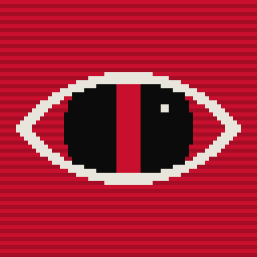
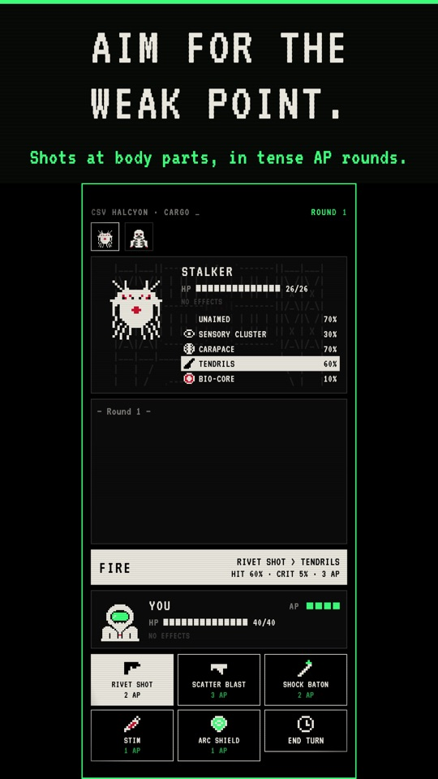
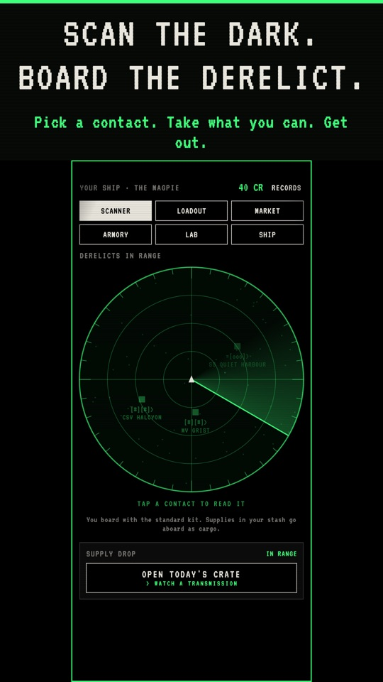
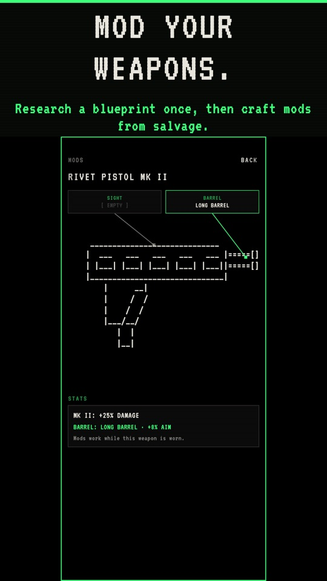
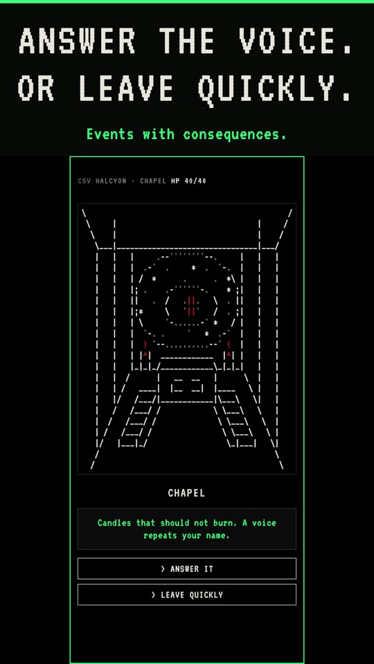
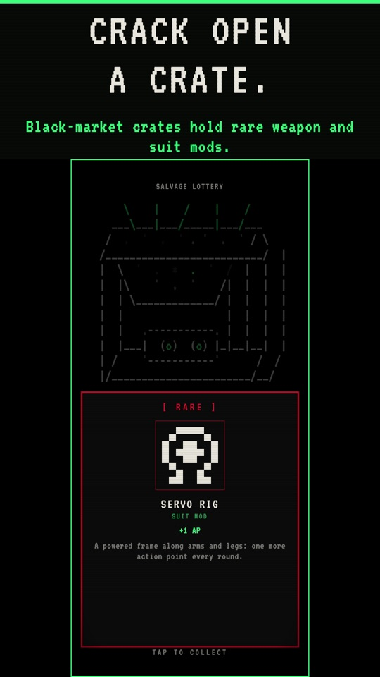
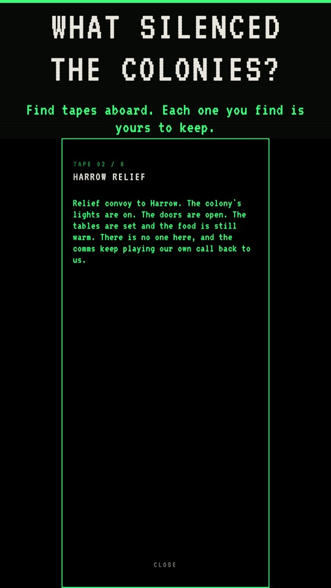
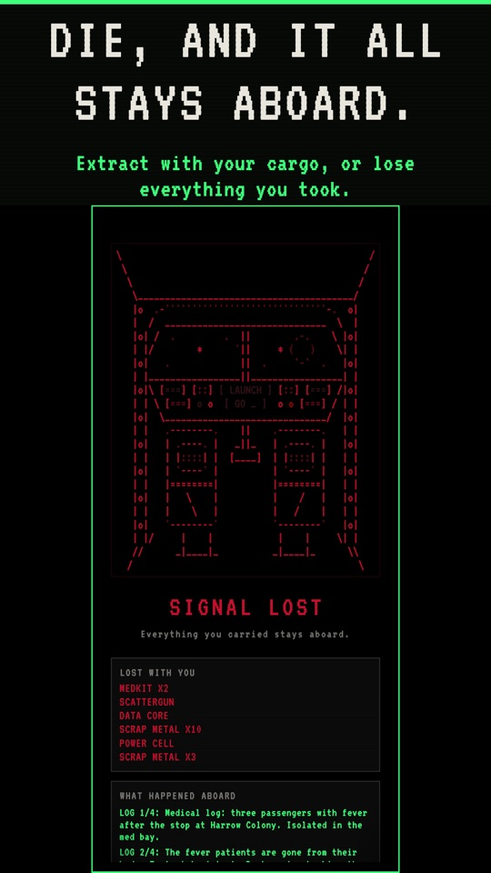
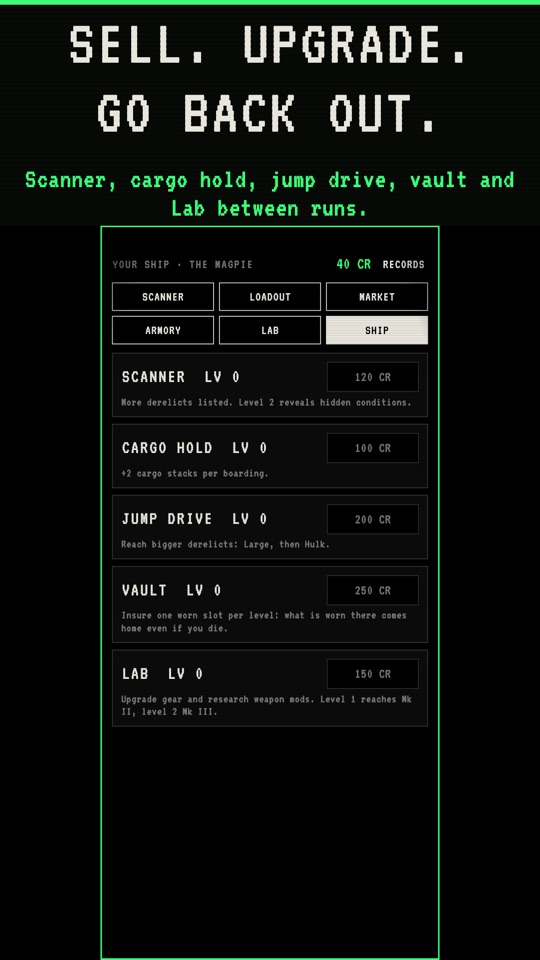

THE OUTER
DARKNESS
Board fast. Take what you can.
Get out before it notices you.
A SCI-FI ROGUELIKE EXTRACTION CRAWLER








- Push your luckMove through a dead ship room by room. You keep only what you carry out, and every step deeper raises the stakes.
- Aim for the weak pointTurn-based fights with aimed shots. Blind a Stalker, cripple a Crawler's legs, crack a Warden's shell.
- Every derelict is differentNew ship maps each boarding. Low oxygen, darkness and infestations change the rules.
- Die, and it all stays aboardLose a run and you lose what you brought in. Get out alive and refit your ship for the next one.
- Built for your phoneOne-handed portrait play, 5–15 minutes a boarding, and runs that save when you stop. No pay-to-win.
DOCK. LOOT. GET OUT.